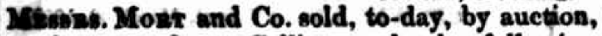
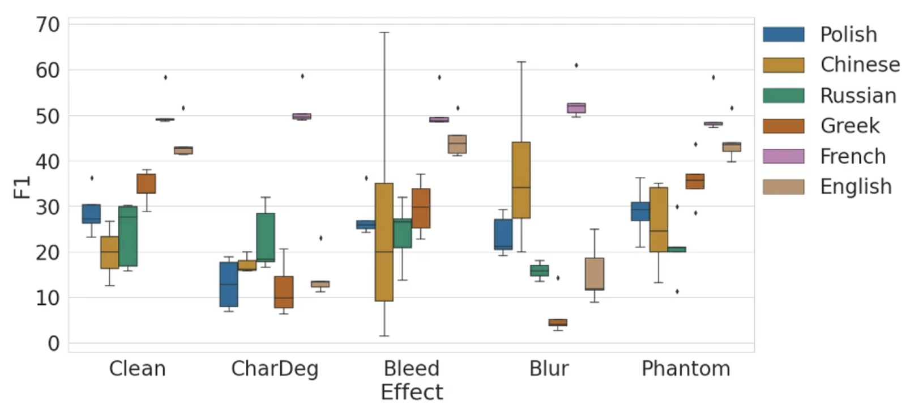
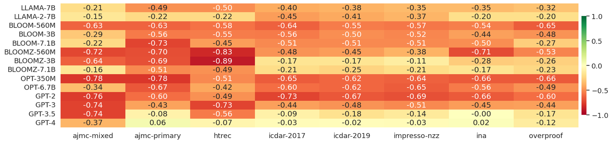
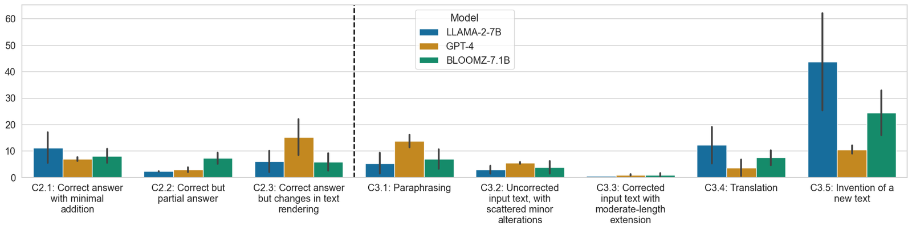
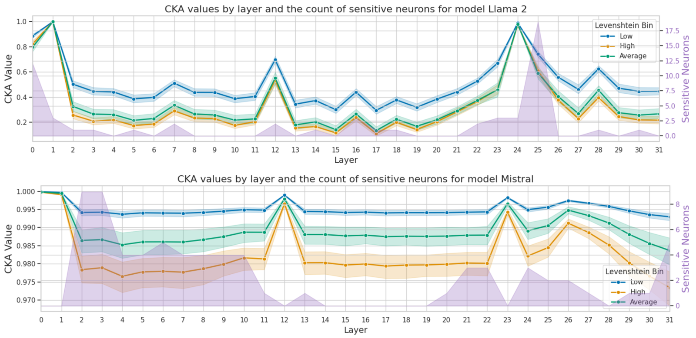

Essay
LLMs in archives: fluent, useful, suspicious
Essay · October 2026 · about 8 minutes
Large language models can help us read damaged collections. They can also hand us a sentence that is smooth, plausible and wrong, with nothing on its surface to tell the difference. Good prose is not the same thing as grounded historical understanding, and in archives that gap is the whole problem.
The page is not the text
Most of what we call a digital archive is text that a machine read once, years ago, at scale. Newspapers, books and registers were scanned and passed through optical character recognition (OCR) with the tools of the day, and that legacy OCR is still what search engines, historians and now language models read.
One line from the Sydney Morning Herald of 1859 shows the problem in miniature. The page says Messrs. Mort and Co. sold, to-day, by auction. The OCR says Missus. Moat and Co. sold, to-day, by auction. Two words out of eight. A reader skims past it; a search for the auctioneer Mort finds nothing; an entity tagger meets a woman called Moat who never existed.

Missus. Moat and Co. sold, to-day, by auction,
Messrs. Moat and Co. sold, to-day, by auction,still wrong, now invisible
Messrs. Mort and Co. sold, to-day, by auction,
These small errors are not cosmetic. Named entity recognition that scores around 90% on clean text can fall to around 60% as the word error rate climbs from 1% to 7% (Hamdi et al., 2019). In our own work on event detection over digitised documents, adding realistic OCR noise cut the performance of standard models sharply, and some architectures broke much faster than others (Boros et al., 2022). The errors are rarely in the boring words. They land on names, places and dates: the things historians actually search for.

The temptation
So the obvious idea is to ask a large language model to fix the text. It has read more than any of us, it writes impeccable French and German, and it will happily return a clean paragraph in seconds.
In 2024 we tested exactly that, on eight benchmarks spanning about ten centuries: six sets of OCR output, one of handwritten transcriptions, one of transcribed radio. We tried several models, several prompts, zero-shot and few-shot, and cut each collection into lines, sentences and regions. In those settings, the honest summary is that it did not work: corrections more often made the text worse than better, and the real question became which setup did the least damage (Boros et al., 2024).

The more interesting finding came from reading the outputs. We annotated about 2,500 corrected passages against the ground truth. The models did not only miss errors. They paraphrased, modernised spelling, smoothed the syntax, finished sentences that were cut off, and sometimes produced text that was simply not on the page.

A bad OCR error looks broken. A bad LLM correction looks fine.
Why fluency is the problem
Before correction, the damage is visible. Missus. Moat looks odd; a careful reader or a quality filter can flag it. After a fluent correction, the damage is invisible. If the model writes Messrs. Moat, or swaps a rare local name for a famous one, the sentence is grammatical and confident and nobody will look twice.
That is the opposite of what an archive is for. Its value sits in the rare: the minor merchant, the misspelled village, the odd period spelling, the name that appears once. These are exactly the tokens a model trained to predict likely text is pulled away from. Even classic spelling correction has this habit of replacing correct but rare words, names especially, with more frequent ones; generative models do it with far more conviction.
The same pattern appears beyond OCR. When we asked ChatGPT to find entities in historical documents, the answer was: yes, but (González-Gallardo et al., 2023). In the HIPE-2026 evaluation on who was where, and when, the hardest part for the 17 participating teams was not the noisy text. It was telling explicit evidence from plausible inference (Opitz et al., 2026). Models are very good at plausible.
Useful, though
None of this means LLMs have no place in archives. Since 2024 the picture has moved quickly. Models tuned on pairs of OCR and corrected text can more than halve the character errors on nineteenth-century English newspapers (Thomas et al., 2024). Vision-language models that read the page image again, rather than patching the old text, now come close to the ground truth on printed pages (Semnani et al., 2025).
But most collections only keep the old text, not a fresh image pipeline. That is why we ran the ICDAR 2026 HIPE-OCRepair competition: text in, text out, with only what archives usually have, an OCR paragraph with its language, date and title. Four teams submitted fifty runs. On the noisiest pages, the best system removed about 85% of the remaining error. On clean pages there was almost nothing to fix, and every unnecessary edit counted against the system (Ehrmann et al., 2026).
Noisy pages OCR at 5.7% CER
85% of the error removed
Clean pages OCR at 0.4% CER
little to fix; every needless edit counts
Our 2026 survey of the field reaches the same conclusion from the other side. Prompted, fine-tuned, reference-guided and multimodal approaches all exist, and none of them consistently wins. Results depend on the language, the document type and how bad the OCR was to begin with, and character error rate alone captures only part of what a generative corrector does (Boros et al., 2026).
Looking inside
There is also a way to be suspicious from the inside. Comparing the activations of Llama and Mistral on clean and corrupted versions of the same words, we found layers and individual neurons that respond strongly to OCR noise. Neutralising some of them gave small but real gains in entity recognition on noisy historical text: around one to two F1 points on newspapers, three to four on classical commentaries (Boros & Ehrmann, 2024). Noise is not just a property of the input. It leaves a trace in the model, and that trace can be measured.

What useful suspicion looks like
If I had to turn this into practice, it would be a short list:
- Keep the original next to the correction. A corrected text is a reading, not a replacement. Store both, and show both.
- Measure on clean pages too. A corrector that helps bad OCR but damages good OCR is not ready for a whole collection.
- Score what people use. Count names, places and dates found or lost, and whether search still works, not only characters.
- Give the model what the archive knows. Language, date and collection are cheap context; even the publication year helps entity recognition on the oldest and noisiest texts (Boros, 2025).
- Let it abstain. “I am not sure” is a valid output. A guess presented as a fact is not.
- Treat every output as a hypothesis. Source criticism does not stop because the source is a model.
Fluent, useful, suspicious. The three words are not in tension. Useful, yes. Innocent, absolutely not.